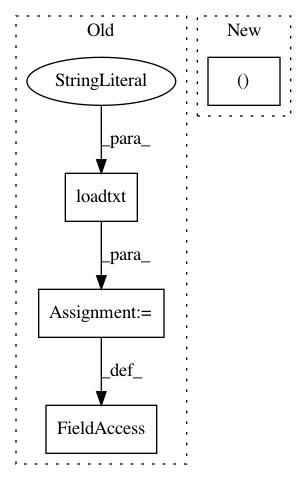

1facee330afb8fbd3f1eda762d0954b32863d2c3,src/spn/tests/old/test_tf.py,,,#,27
Before Change
if __name__ == "__main__":
data = np.loadtxt("test_data.txt", delimiter=";", dtype=np.int32)
ds_context = Context()
ds_context.statistical_type = np.asarray(["discrete"] * data.shape[1])
add_domains(data, ds_context)
After Change
if __name__ == "__main__":
np.random.seed(17)
data = np.random.normal(10, 0.01, size=2000).tolist() + np.random.normal(30, 10, size=2000).tolist()
data = np.array(data).reshape((-1, 10))
ds_context = Context(meta_types=[MetaType.REAL] * data.shape[1])
ds_context.add_domains(data)
In pattern: SUPERPATTERN
Frequency: 3
Non-data size: 4
Instances
Project Name: SPFlow/SPFlow
Commit Name: 1facee330afb8fbd3f1eda762d0954b32863d2c3
Time: 2018-06-19
Author: molina@cs.tu-darmstadt.de
File Name: src/spn/tests/old/test_tf.py
Class Name:
Method Name:
Project Name: scikit-multiflow/scikit-multiflow
Commit Name: 2cf9e49a1f849100e1b55e3e474e086ddfa6fff2
Time: 2018-09-12
Author: jacob.montiel@gmail.com
File Name: src/skmultiflow/demos/_test_sam_knn.py
Class Name:
Method Name:
Project Name: SPFlow/SPFlow
Commit Name: 17850af896582ee071cccda2c4362d06fca17aac
Time: 2018-03-30
Author: molina@cs.tu-darmstadt.de
File Name: src/spn/tests/learnspn.py
Class Name:
Method Name: